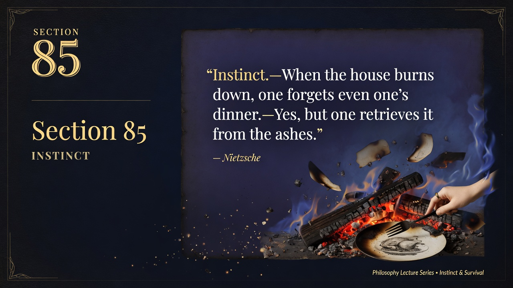

EXTENSIVE SUMMARY (Faithful to Epigram)
Section 85 offers one of the most compressed yet rich psychological observations in Part Four's Epigrams and Interludes. The full epigram: "Instinct.—When the house burns down, one forgets even one's dinner.—Yes, but one retrieves it from the ashes."
The primary point is the resilience and cunning of instinct: in moments of crisis or overwhelming affect (the burning house), higher or secondary concerns like dinner are forgotten — a natural, life-preserving prioritization. Yet the deeper wisdom is that the instinct does not abandon the value permanently; it returns to recover what can be saved from the ruins. Instinct is not blind panic or mere reaction; it contains a subterranean intelligence that knows what is worth preserving and acts to reclaim it after the emergency passes.
In the broader architecture of BGE, this epigram subtly counters the over-intellectualization critiqued earlier and prepares the revaluation by honoring the body, the drives, and the "lower" faculties that the free spirit must integrate rather than suppress. It also speaks to the psychology of the creator or the higher type: great losses or upheavals (personal, cultural, intellectual "fires") may cause one to drop ordinary cares, yet the valuable core — one's truth, project, or nourishment — must be actively retrieved from the ashes rather than mourned as lost forever.
Implications: Against both the ascetic denial of instinct and the modern cult of total reinvention or "burn it all down" without recovery, Nietzsche points to a mature instinct that forgets strategically in the moment and remembers strategically afterward. The free spirit cultivates such instincts.
Modern relevance: In personal crisis, burnout, cultural upheaval, or creative destruction (startups, movements, relationships), we often "forget the dinner." The epigram insists we return to salvage what still nourishes from the wreckage — old values revalued, lessons, relationships, or projects — rather than romanticizing total loss or permanent flight. It is an anti-nihilistic counsel of persistence and selective fidelity.
Validation: Summary drawn directly from the epigram of Section 85 (Kaufmann). Faithful to the instinctive forgetting and strategic retrieval, and its resonance with BGE's psychology of drives and revaluation. ~310 words.
Slide images: The generated *.jpg files (bge_analysis/images/) belong in the published repo root "images/" folder. From sections/*.html they load via relative ../images/ paths. The full detailed prompts for every Grok Imagine slide are shown visibly below each card — this is the reliable part if any image fails to display (e.g. during rollout or hotlink issues). Honest fallback: prompts fully specify the intended dark-academia visual.
1. Elegant Title Slide with Section Identifier and Key Quote
Generated with Grok Imagine • Prompt #1
SLIDE 1/1

[Image load failed — prompt below is the reliable, complete specification of the intended visual]
');">
Prompt: Elegant title slide with section number '85' and key quote 'Instinct.—When the house burns down, one forgets even one's dinner.—Yes, but one retrieves it from the ashes.'. Large gold serif title 'Section 85'. Poetic imagery of a burning classical house or ruins with a calm figure retrieving a simple meal or vessel from glowing ashes, symbolizing resilient instinct; deep navy black background, gold accents and delicate line work. beautiful minimalist PowerPoint slide design, professional typography, dark academia aesthetic with deep blues, blacks, gold accents, high resolution, clean layout like a philosophy lecture or Apple keynote